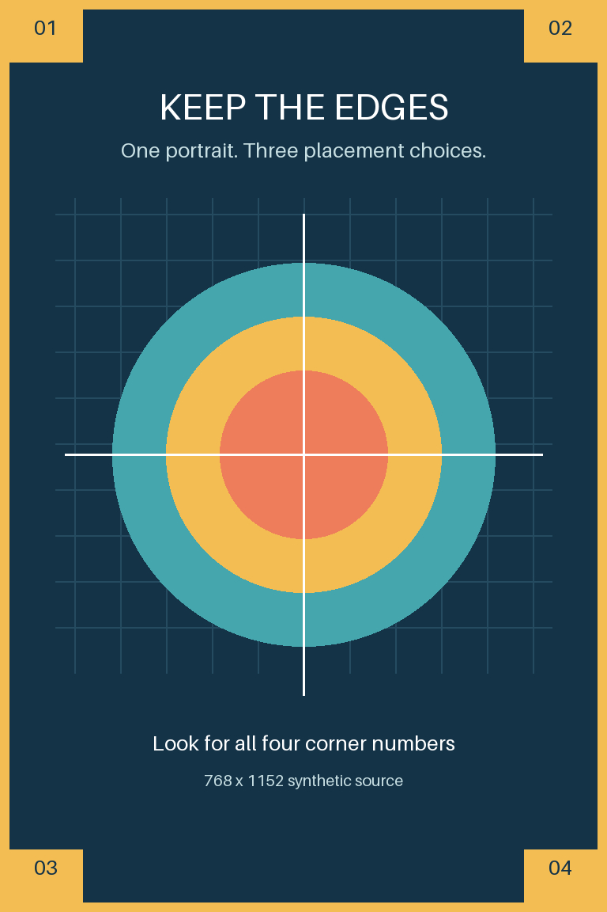
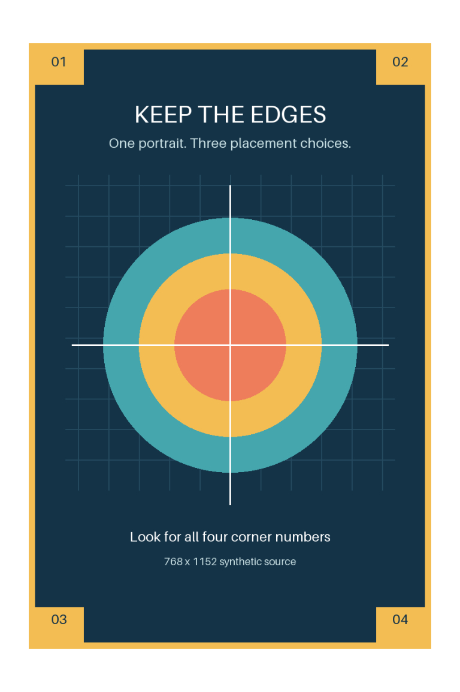

Borderless fill
Cover the canvas with a centered crop. Default.
Fit
Keep the whole source, using the full digital canvas.
Preserve edges
Keep the whole source inside the inset, on white.
Selected: Preserve edges · JPEG quality 100 · 4:4:4 · 768 × 1152
Compare the same image in three layouts. These previews show decoded JPEG pixels; the printer can trim additional content beyond the digital preview.
Suggested safe area: 48 pixels inside each edge. The violet band marks content at greater risk of trimming. The inner box is a conservative placement guide based on one CAL-02 sheet, not an exact cut line or a guarantee. Preserve edges fits the whole source inside it, adding white margins. Paper color and final border widths can differ.


Selected JPEG · Selected decoded preview · Selected preview with guides · Selected pixels before JPEG compression · Preparation details
Everything was prepared locally. Nothing was sent to a printer.